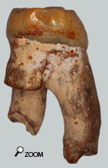
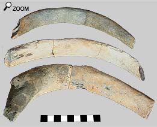
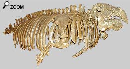
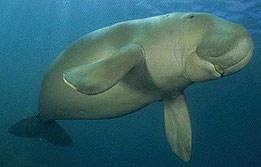
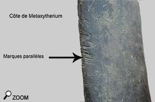

|
Des crêtes et des côtes...

Metaxytherium Medium appartient à l’ordre des siréniens.
C'est un mammifère qui ressemblait beaucoup aux dugongs actuels, à l’exception des  dents qui sont significativement différentes. En effet les dents du métax conservent des caractères primitifs comme une organisation en crêtes constituées de petits cônes juxtaposés, rappelant vaguement l'organisation des dents de proboscidiens. Mais rapidement les dents jugales montrent des tablettes d'usures carcatéristiques.
Mais dans les faluns, il est fréquent de trouver des côtes  de Metaxytherium. Cela peut paraître curieux quand on sait que les côtes sont des os fragiles qu’on rencontre peu dans les faluns. En effet la plupart du temps, les côtes de mammifères sont des os légers et fins dont la structure interne est spongieuse afin d’alléger l’os.
Or les cotes de Metaxytherium sont pleines, ce qui permet à l’animal de rester sous l’eau sans dépenser trop d’énergie pendant les interminables séances de broutage d’algues. C’est cette propriété qui a permis une meilleure conservation des côtes.
 Notons que les cotes de Metaxytherium sont beaucoup plus nombreuses dans les dépôts Serravaliens que dans les dépôts langhiens d’Anjou Touraine. On peut même parler d’une période d’age d’or pour cet animal dans le miocène moyen. Dans les faluns, c’est pratiquement le seul mammifère dont il soit possible de trouver un squelette entier en continuité anatomique, comme cela a été le cas par le passé.
Les siréniens actuels
Les siréniens sont des mammifères marins de grande dimension qui ont perdu l’aptitude à se mouvoir sur la terre ferme. Curieusement ils ne sont pas apparentés aux phoques ou autres éléphants de mer, mais partageraient plutôt un ancêtre commun avec l’éléphant ! Le vrai celui-ci ! Ils ont un corps fusiforme, des membres antérieurs brefs en forme de palettes natatoires composées de 5 doigts dotés de petits ongles. Les membres postérieurs ne sont plus visibles et restent sous forme vestigale.
 Le corps est recouvert d’une peau dure et résistante, avec de rares poils. Les siréniens sont des herbivores et ils vivent dans les zones côtières où ils paissent les algues des « prairies sous-marines ». Il arrive souvent qu’ils migrent vers les milieux continentaux, en remontant le courant des fleuves.
Le groupe des siréniens est représenté actuellement par 2 familles : les lamantins et les dugongs.
Les lamantins (trichechidés) se rencontrent le long de la côte atlantique de l’Amérique du sud, de la mer des caraïbes et de l’Afrique occidentale et du bassin du Niger. L’espèce la plus commune est le Trichechus Manato appelé communément la vache de mer. Les dugongs actuels peuvent atteindre une longueur de 3 m et un poids de presque 200 kg. On les rencontre en mer rouge, sur les côtes de l’océan indien de l’Afrique, l’Asie et même en Australie.
Les dugongs sont en danger. Rhytina Gigas dont les dimensions avoisinaient les 8 m pour un poids estimé autour de 4000 kg, vivait autrefois près des îles Commodoro, mais cette espèce fut décimée par les chasseurs et on n’a plus signalé cet animal depuis 1768. Une histoire écrite dans la pierre
Au miocène l’ennemi du Metaxytherium était le Megalodon. En effet le sirénien constituait une proie de choix pour ces énormes requins.
 Le fragment de cote montré ici nous parle de la rencontre de ces 2 créatures, il y a plusieurs millions d’années. La côte présente sur sa partie concave une série d’éraflures parallèles équidistantes, comme rayée par un peigne. Ces marques n’ont pas été faites lors de l’extraction du fossile parce que la patine des entailles est identique à celle de la côte.
Donc, il est probable que cette côte a été marquée par les dentelures d’une dent de megalodon. L’espace entre les éraflures nous parle d’un requin énorme. Certaines marques trouvent leur origine sur le dessus de la cote, d’autres commencent seulement sur la partie convexe, alors que l’emprise de la morsure s’accentuait.
Pour le Metaytherium il s’agit d’une tragédie, mais pour le chercheur de fossiles il s’agit d’un témoignage intéressant sur une scène qui s’est jouée dans les eaux du miocène!
|